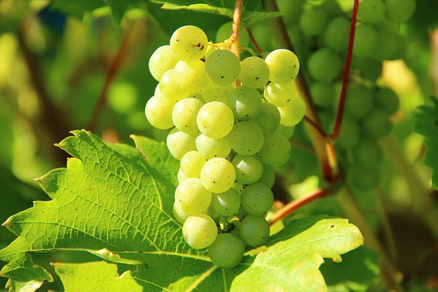
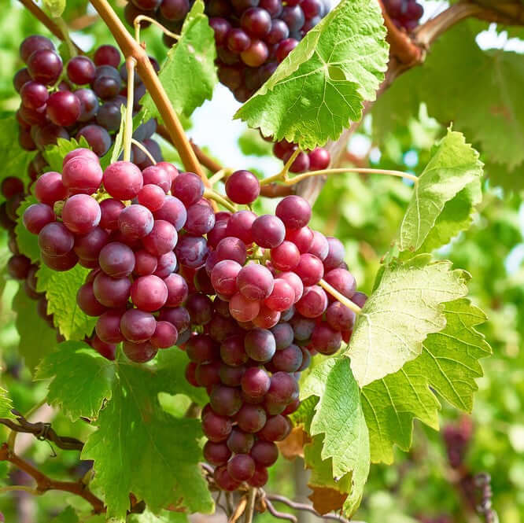
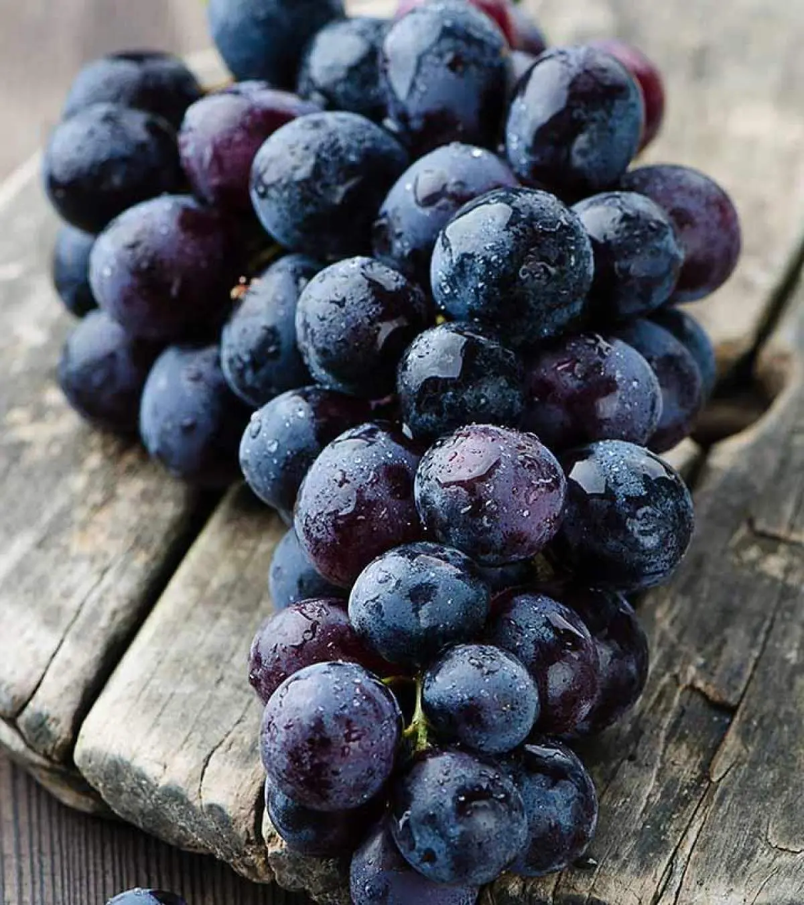
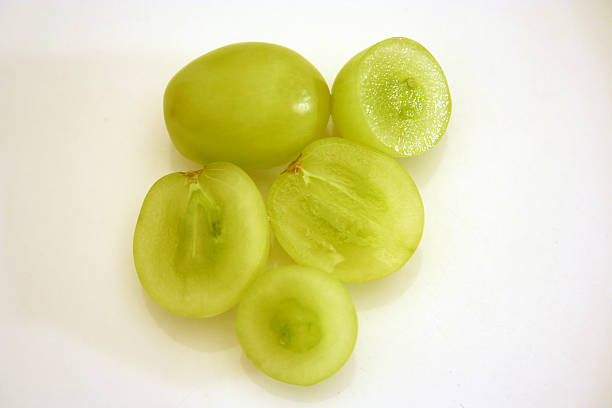
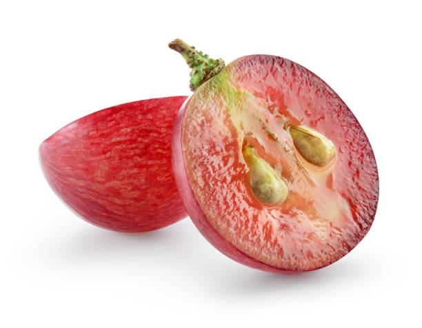
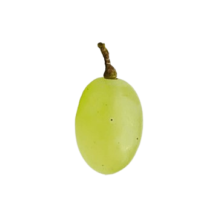

 Green grapes
Green grapes, also known as white grapes, get their color from the absence of anthocyanins, pigments that produce red and purple hues. These grapes are generally smaller and tarter than red grapes.
 Red grapes
Red grapes are a type of grape that get their color from anthocyanins, pigments found in the skin. They are typically round or oblong, with a range of colors from light red to deep purple-red.
 Black grapes
Black grapes are small to medium-sized fruits with a deep purple-black color, known for their sweet flavor and high antioxidant content.
Seedless grapes VS Seeded grapes
 Seedless Grapes
VS
 Seeded Grapes
Grape Clicker
Click grape to catch it
